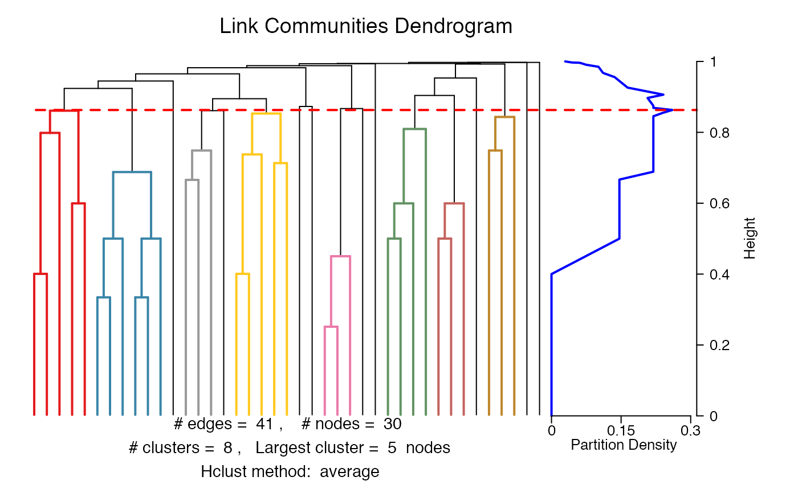
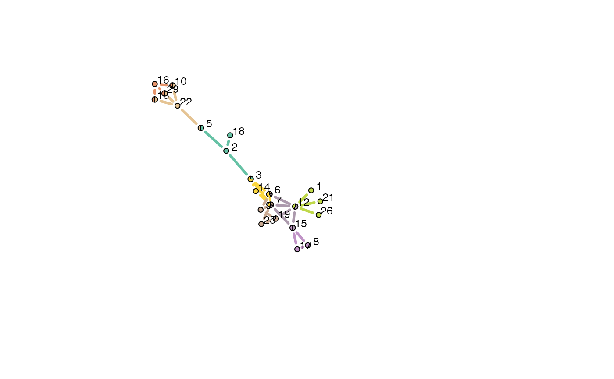
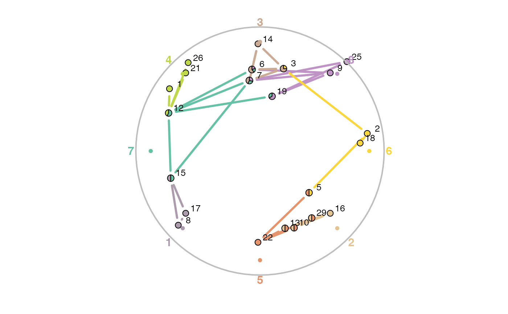

linkcomm packagelinkcomm-package.Rdlinkcomm provides tools for the generation, visualization, and analysis of link communities in networks of arbitrary size and type.
Link communities reveal the nested and overlapping structure in networks, and uncover the key nodes that form connections to multiple communities. linkcomm provides tools for generating, visualizing, and analysing link communities in networks of arbitrary size and type.
For a more detailed overview of how to use the package:
vignette(topic = "linkcomm", package = "linkcomm")
To run an interactive demonstration of linkcomm within R:
demo(topic = "linkcomm", package = "linkcomm")
Alex T. Kalinka alex.t.kalinka@gmail.com
Ahn, Y.Y., Bagrow, J.P., and Lehmann, S. (2010). Link communities reveal multiscale complexity in networks. Nature 466, 761-764.
Becker, E., Robisson, B., Chapple, C.E., Guenoche, A. and Brun, C. (2012) Multifunctional proteins revealed by overlapping clustering in protein interaction network. Bioinformatics 28, 84-90.
Kalinka, A.T. and Tomancak, P. (2011). linkcomm: an R package for the generation, visualization, and analysis of link communities in networks of arbitrary size and type. Bioinformatics 27, 2011-2012.
Spencer, R. (2010). http://scaledinnovation.com/analytics/communities/comlinks.html
getLinkCommunities, getOCG.clusters, plot.linkcomm, pp_rnapol, lesmiserables, karate, weighted, igraph, RColorBrewer, grid
#> Checking for loops and duplicate edges... 0.000% Checking for loops and duplicate edges... 2.174% Checking for loops and duplicate edges... 4.348% Checking for loops and duplicate edges... 6.522% Checking for loops and duplicate edges... 8.696% Checking for loops and duplicate edges... 10.870% Checking for loops and duplicate edges... 13.043% Checking for loops and duplicate edges... 15.217% Checking for loops and duplicate edges... 17.391% Checking for loops and duplicate edges... 19.565% Checking for loops and duplicate edges... 21.739% Checking for loops and duplicate edges... 23.913% Checking for loops and duplicate edges... 26.087% Checking for loops and duplicate edges... 28.261% Checking for loops and duplicate edges... 30.435% Checking for loops and duplicate edges... 32.609% Checking for loops and duplicate edges... 34.783% Checking for loops and duplicate edges... 36.957% Checking for loops and duplicate edges... 39.130% Checking for loops and duplicate edges... 41.304% Checking for loops and duplicate edges... 43.478% Checking for loops and duplicate edges... 45.652% Checking for loops and duplicate edges... 47.826% Checking for loops and duplicate edges... 50.000% Checking for loops and duplicate edges... 52.174% Checking for loops and duplicate edges... 54.348% Checking for loops and duplicate edges... 56.522% Checking for loops and duplicate edges... 58.696% Checking for loops and duplicate edges... 60.870% Checking for loops and duplicate edges... 63.043% Checking for loops and duplicate edges... 65.217% Checking for loops and duplicate edges... 67.391% Checking for loops and duplicate edges... 69.565% Checking for loops and duplicate edges... 71.739% Checking for loops and duplicate edges... 73.913% Checking for loops and duplicate edges... 76.087% Checking for loops and duplicate edges... 78.261% Checking for loops and duplicate edges... 80.435% Checking for loops and duplicate edges... 82.609% Checking for loops and duplicate edges... 84.783% Checking for loops and duplicate edges... 86.957% Checking for loops and duplicate edges... 89.130% Checking for loops and duplicate edges... 91.304% Checking for loops and duplicate edges... 93.478% Checking for loops and duplicate edges... 95.652% Checking for loops and duplicate edges... 97.826% Checking for loops and duplicate edges... 100.000% #> Found and removed 4 loop(s) #> Found and removed 2 duplicate edge(s) #> Calculating edge similarities for 41 edges... 0.00% Calculating edge similarities for 41 edges... 2.56% Calculating edge similarities for 41 edges... 5.13% Calculating edge similarities for 41 edges... 7.69% Calculating edge similarities for 41 edges... 10.26% Calculating edge similarities for 41 edges... 12.82% Calculating edge similarities for 41 edges... 15.38% Calculating edge similarities for 41 edges... 17.95% Calculating edge similarities for 41 edges... 20.51% Calculating edge similarities for 41 edges... 23.08% Calculating edge similarities for 41 edges... 25.64% Calculating edge similarities for 41 edges... 28.21% Calculating edge similarities for 41 edges... 30.77% Calculating edge similarities for 41 edges... 33.33% Calculating edge similarities for 41 edges... 35.90% Calculating edge similarities for 41 edges... 38.46% Calculating edge similarities for 41 edges... 41.03% Calculating edge similarities for 41 edges... 43.59% Calculating edge similarities for 41 edges... 46.15% Calculating edge similarities for 41 edges... 48.72% Calculating edge similarities for 41 edges... 51.28% Calculating edge similarities for 41 edges... 53.85% Calculating edge similarities for 41 edges... 56.41% Calculating edge similarities for 41 edges... 58.97% Calculating edge similarities for 41 edges... 61.54% Calculating edge similarities for 41 edges... 64.10% Calculating edge similarities for 41 edges... 66.67% Calculating edge similarities for 41 edges... 69.23% Calculating edge similarities for 41 edges... 71.79% Calculating edge similarities for 41 edges... 74.36% Calculating edge similarities for 41 edges... 76.92% Calculating edge similarities for 41 edges... 79.49% Calculating edge similarities for 41 edges... 82.05% Calculating edge similarities for 41 edges... 84.62% Calculating edge similarities for 41 edges... 87.18% Calculating edge similarities for 41 edges... 89.74% Calculating edge similarities for 41 edges... 92.31% Calculating edge similarities for 41 edges... 94.87% Calculating edge similarities for 41 edges... 97.44% Calculating edge similarities for 41 edges... 100.00% #> Hierarchical clustering of edges... #> Calculating link densities... 0.00% Calculating link densities... 2.56% Calculating link densities... 5.13% Calculating link densities... 7.69% Calculating link densities... 10.26% Calculating link densities... 12.82% Calculating link densities... 15.38% Calculating link densities... 17.95% Calculating link densities... 20.51% Calculating link densities... 23.08% Calculating link densities... 25.64% Calculating link densities... 28.21% Calculating link densities... 30.77% Calculating link densities... 33.33% Calculating link densities... 35.90% Calculating link densities... 38.46% Calculating link densities... 41.03% Calculating link densities... 43.59% Calculating link densities... 46.15% Calculating link densities... 48.72% Calculating link densities... 51.28% Calculating link densities... 53.85% Calculating link densities... 56.41% Calculating link densities... 58.97% Calculating link densities... 61.54% Calculating link densities... 64.10% Calculating link densities... 66.67% Calculating link densities... 69.23% Calculating link densities... 71.79% Calculating link densities... 74.36% Calculating link densities... 76.92% Calculating link densities... 79.49% Calculating link densities... 82.05% Calculating link densities... 84.62% Calculating link densities... 87.18% Calculating link densities... 89.74% Calculating link densities... 92.31% Calculating link densities... 94.87% Calculating link densities... 97.44% Calculating link densities... 100.00% #> Maximum partition density = 0.2601626 #> Finishing up...1/4... 12% Finishing up...1/4... 25% Finishing up...1/4... 37% Finishing up...1/4... 50% Finishing up...1/4... 62% Finishing up...1/4... 75% Finishing up...1/4... 87% Finishing up...1/4... 100% Finishing up...2/4... 12% Finishing up...2/4... 25% Finishing up...2/4... 37% Finishing up...2/4... 50% Finishing up...2/4... 62% Finishing up...2/4... 75% Finishing up...2/4... 87% Finishing up...2/4... 100% Finishing up...3/4... 12% Finishing up...3/4... 25% Finishing up...3/4... 37% Finishing up...3/4... 50% Finishing up...3/4... 62% Finishing up...3/4... 75% Finishing up...3/4... 87% Finishing up...3/4... 100% Finishing up...4/4... 0.00% Finishing up...4/4... 4.76% Finishing up...4/4... 9.52% Finishing up...4/4... 14.29% Finishing up...4/4... 19.05% Finishing up...4/4... 23.81% Finishing up...4/4... 28.57% Finishing up...4/4... 33.33% Finishing up...4/4... 38.10% Finishing up...4/4... 42.86% Finishing up...4/4... 47.62% Finishing up...4/4... 52.38% Finishing up...4/4... 57.14% Finishing up...4/4... 61.90% Finishing up...4/4... 66.67% Finishing up...4/4... 71.43% Finishing up...4/4... 76.19% Finishing up...4/4... 80.95% Finishing up...4/4... 85.71% Finishing up...4/4... 90.48% Finishing up...4/4... 95.24% Finishing up...4/4... 100.00% #> Plotting... #> Colouring dendrogram... 1% Colouring dendrogram... 2% Colouring dendrogram... 3% Colouring dendrogram... 4% Colouring dendrogram... 6% Colouring dendrogram... 7% Colouring dendrogram... 8% Colouring dendrogram... 9% Colouring dendrogram... 11% Colouring dendrogram... 12% Colouring dendrogram... 13% Colouring dendrogram... 14% Colouring dendrogram... 16% Colouring dendrogram... 17% Colouring dendrogram... 18% Colouring dendrogram... 19% Colouring dendrogram... 20% Colouring dendrogram... 22% Colouring dendrogram... 23% Colouring dendrogram... 24% Colouring dendrogram... 25% Colouring dendrogram... 27% Colouring dendrogram... 28% Colouring dendrogram... 29% Colouring dendrogram... 30% Colouring dendrogram... 32% Colouring dendrogram... 33% Colouring dendrogram... 34% Colouring dendrogram... 35% Colouring dendrogram... 37% Colouring dendrogram... 38% Colouring dendrogram... 39% Colouring dendrogram... 40% Colouring dendrogram... 41% Colouring dendrogram... 43% Colouring dendrogram... 44% Colouring dendrogram... 45% Colouring dendrogram... 46% Colouring dendrogram... 48% Colouring dendrogram... 49% Colouring dendrogram... 50% Colouring dendrogram... 51% Colouring dendrogram... 53% Colouring dendrogram... 54% Colouring dendrogram... 55% Colouring dendrogram... 56% Colouring dendrogram... 58% Colouring dendrogram... 59% Colouring dendrogram... 60% Colouring dendrogram... 61% Colouring dendrogram... 62% Colouring dendrogram... 64% Colouring dendrogram... 65% Colouring dendrogram... 66% Colouring dendrogram... 67% Colouring dendrogram... 69% Colouring dendrogram... 70% Colouring dendrogram... 71% Colouring dendrogram... 72% Colouring dendrogram... 74% Colouring dendrogram... 75% Colouring dendrogram... 76% Colouring dendrogram... 77% Colouring dendrogram... 79% Colouring dendrogram... 80% Colouring dendrogram... 81% Colouring dendrogram... 82% Colouring dendrogram... 83% Colouring dendrogram... 85% Colouring dendrogram... 86% Colouring dendrogram... 87% Colouring dendrogram... 88% Colouring dendrogram... 90% Colouring dendrogram... 91% Colouring dendrogram... 92% Colouring dendrogram... 93% Colouring dendrogram... 95% Colouring dendrogram... 96% Colouring dendrogram... 97% Colouring dendrogram... 98% Colouring dendrogram... 100%#> Getting node community edge density...4% Getting node community edge density...9% Getting node community edge density...13% Getting node community edge density...18% Getting node community edge density...22% Getting node community edge density...27% Getting node community edge density...31% Getting node community edge density...36% Getting node community edge density...40% Getting node community edge density...45% Getting node community edge density...50% Getting node community edge density...54% Getting node community edge density...59% Getting node community edge density...63% Getting node community edge density...68% Getting node community edge density...72% Getting node community edge density...77% Getting node community edge density...81% Getting node community edge density...86% Getting node community edge density...90% Getting node community edge density...95% Getting node community edge density...100% #> Getting node layout... #> Constructing node pies...4% Constructing node pies...9% Constructing node pies...13% Constructing node pies...18% Constructing node pies...22% Constructing node pies...27% Constructing node pies...31% Constructing node pies...36% Constructing node pies...40% Constructing node pies...45% Constructing node pies...50% Constructing node pies...54% Constructing node pies...59% Constructing node pies...63% Constructing node pies...68% Constructing node pies...72% Constructing node pies...77% Constructing node pies...81% Constructing node pies...86% Constructing node pies...90% Constructing node pies...95% Constructing node pies...100%#> Ordering communities according to dendrogram...12% Ordering communities according to dendrogram...25% Ordering communities according to dendrogram...37% Ordering communities according to dendrogram...50% Ordering communities according to dendrogram...62% Ordering communities according to dendrogram...75% Ordering communities according to dendrogram...87% Ordering communities according to dendrogram...100% #> Calculating node co-ordinates for Spencer circle...4% Calculating node co-ordinates for Spencer circle...9% Calculating node co-ordinates for Spencer circle...13% Calculating node co-ordinates for Spencer circle...18% Calculating node co-ordinates for Spencer circle...22% Calculating node co-ordinates for Spencer circle...27% Calculating node co-ordinates for Spencer circle...31% Calculating node co-ordinates for Spencer circle...36% Calculating node co-ordinates for Spencer circle...40% Calculating node co-ordinates for Spencer circle...45% Calculating node co-ordinates for Spencer circle...50% Calculating node co-ordinates for Spencer circle...54% Calculating node co-ordinates for Spencer circle...59% Calculating node co-ordinates for Spencer circle...63% Calculating node co-ordinates for Spencer circle...68% Calculating node co-ordinates for Spencer circle...72% Calculating node co-ordinates for Spencer circle...77% Calculating node co-ordinates for Spencer circle...81% Calculating node co-ordinates for Spencer circle...86% Calculating node co-ordinates for Spencer circle...90% Calculating node co-ordinates for Spencer circle...95% Calculating node co-ordinates for Spencer circle...100% #> Getting node community edge density...4% Getting node community edge density...9% Getting node community edge density...13% Getting node community edge density...18% Getting node community edge density...22% Getting node community edge density...27% Getting node community edge density...31% Getting node community edge density...36% Getting node community edge density...40% Getting node community edge density...45% Getting node community edge density...50% Getting node community edge density...54% Getting node community edge density...59% Getting node community edge density...63% Getting node community edge density...68% Getting node community edge density...72% Getting node community edge density...77% Getting node community edge density...81% Getting node community edge density...86% Getting node community edge density...90% Getting node community edge density...95% Getting node community edge density...100% #> Getting node layout... #> Constructing node pies...4% Constructing node pies...9% Constructing node pies...13% Constructing node pies...18% Constructing node pies...22% Constructing node pies...27% Constructing node pies...31% Constructing node pies...36% Constructing node pies...40% Constructing node pies...45% Constructing node pies...50% Constructing node pies...54% Constructing node pies...59% Constructing node pies...63% Constructing node pies...68% Constructing node pies...72% Constructing node pies...77% Constructing node pies...81% Constructing node pies...86% Constructing node pies...90% Constructing node pies...95% Constructing node pies...100%#> Completed... 3% Completed... 6% Completed... 10% Completed... 13% Completed... 16% Completed... 20% Completed... 23% Completed... 26% Completed... 30% Completed... 33% Completed... 36% Completed... 40% Completed... 43% Completed... 46% Completed... 50% Completed... 53% Completed... 56% Completed... 60% Completed... 63% Completed... 66% Completed... 70% Completed... 73% Completed... 76% Completed... 80% Completed... 83% Completed... 86% Completed... 90% Completed... 93% Completed... 96% Completed... 100%#> 6 7 15 13 10 29 3 12 #> 3.000000 3.000000 2.714286 2.000000 2.000000 2.000000 2.714286 2.750000 #> 5 19 17 8 16 14 21 26 #> 2.750000 2.142857 1.000000 1.000000 1.000000 1.000000 1.000000 1.000000 #> 1 22 18 2 9 25 28 31 #> 1.000000 1.000000 1.000000 1.000000 1.000000 1.000000 0.000000 0.000000 #> 20 11 35 32 37 53 #> 0.000000 0.000000 0.000000 0.000000 0.000000 0.000000#> Completed... 12% Completed... 25% Completed... 37% Completed... 50% Completed... 62% Completed... 75% Completed... 87% Completed... 100%#> list()#> Calculating cluster similarities 1/2... 0.00% Calculating cluster similarities 1/2... 2.94% Calculating cluster similarities 1/2... 5.88% Calculating cluster similarities 1/2... 8.82% Calculating cluster similarities 1/2... 11.76% Calculating cluster similarities 1/2... 14.71% Calculating cluster similarities 1/2... 17.65% Calculating cluster similarities 1/2... 20.59% Calculating cluster similarities 1/2... 23.53% Calculating cluster similarities 1/2... 26.47% Calculating cluster similarities 1/2... 29.41% Calculating cluster similarities 1/2... 32.35% Calculating cluster similarities 1/2... 35.29% Calculating cluster similarities 1/2... 38.24% Calculating cluster similarities 1/2... 41.18% Calculating cluster similarities 1/2... 44.12% Calculating cluster similarities 1/2... 47.06% Calculating cluster similarities 1/2... 50.00% Calculating cluster similarities 1/2... 52.94% Calculating cluster similarities 1/2... 55.88% Calculating cluster similarities 1/2... 58.82% Calculating cluster similarities 1/2... 61.76% Calculating cluster similarities 1/2... 64.71% Calculating cluster similarities 1/2... 67.65% Calculating cluster similarities 1/2... 70.59% Calculating cluster similarities 1/2... 73.53% Calculating cluster similarities 1/2... 76.47% Calculating cluster similarities 1/2... 79.41% Calculating cluster similarities 1/2... 82.35% Calculating cluster similarities 1/2... 85.29% Calculating cluster similarities 1/2... 88.24% Calculating cluster similarities 1/2... 91.18% Calculating cluster similarities 1/2... 94.12% Calculating cluster similarities 1/2... 97.06% Calculating cluster similarities 2/2... 0.00% Calculating cluster similarities 2/2... 16.67% Calculating cluster similarities 2/2... 33.33% Calculating cluster similarities 2/2... 50.00% Calculating cluster similarities 2/2... 66.67% Calculating cluster similarities 2/2... 83.33% Calculating cluster similarities 2/2... 100.00% #> Hierarchical clustering... #> Plotting...#> #> Call: #> hclust(d = distobj, method = hcmethod) #> #> Cluster method : ward.D #> Number of objects: 8 #>